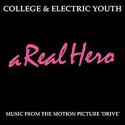
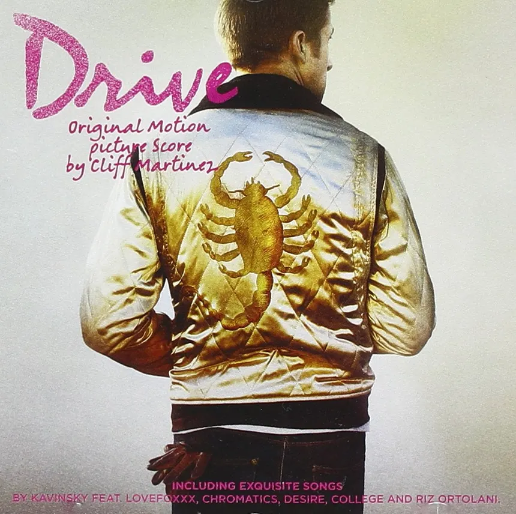
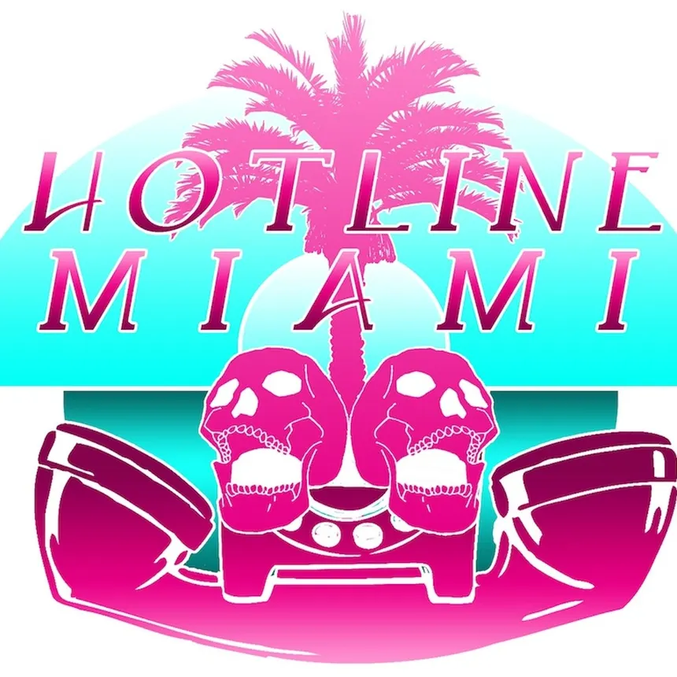
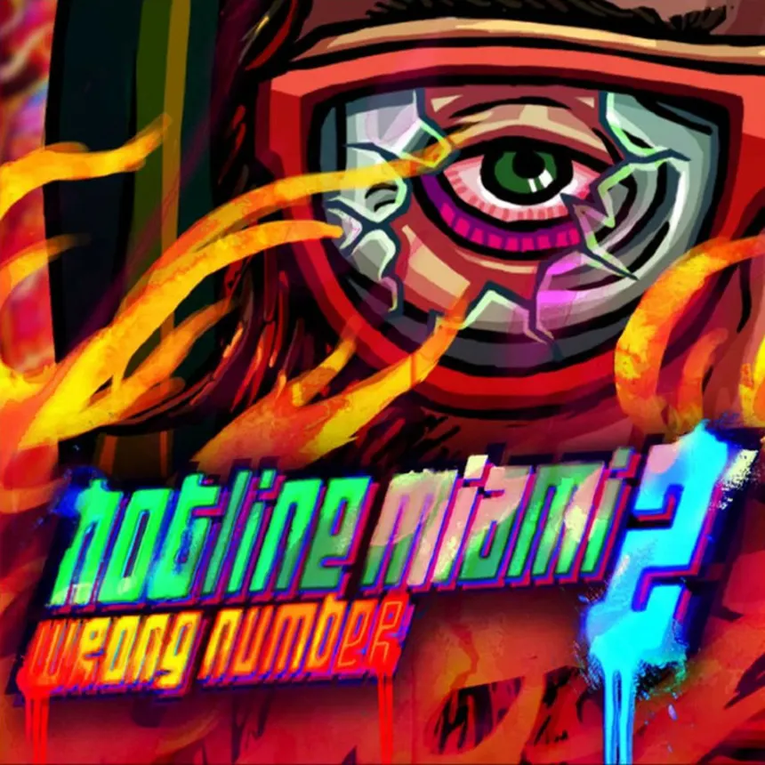
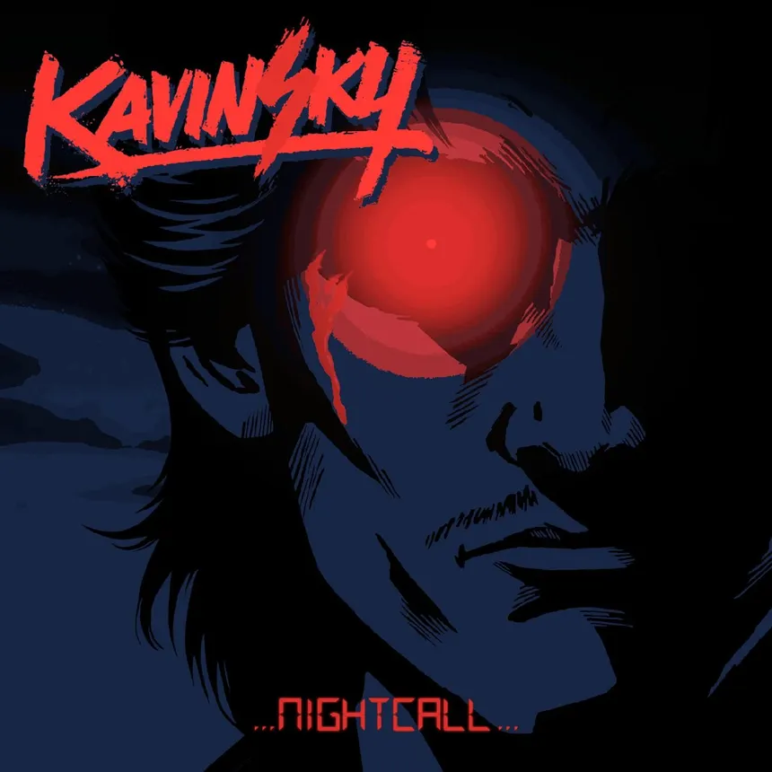

Indie Pop / Synthpop
A Real Hero (Single)
College & Electric Youth
Рік: 2011 | Треків: 1
Епічний синтпоп-трек про справжнього героя та людяність.

Рік: 2011 | Треків: 1
Епічний синтпоп-трек про справжнього героя та людяність.

Рік: 2011 | Треків: 19
Культовий саундтрек до фільму «Drive».

Рік: 2012 | Треків: 22
Легендарний саундтрек культової гри.

Рік: 2015 | Треків: 49
Масштабне продовження із шаленими електронними треками.
Рік: 2012 | Треків: 4
Мінімалістичний альбом із треками Hydrogen та Paris.

Рік: 2013 | Треків: 13
Альбом з головним треком Nightcall.